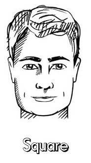
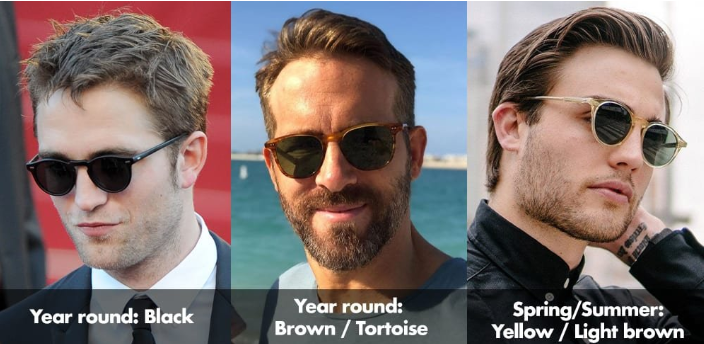

Square Face Features
Square faces have balanced proportions.They can be very wide, with sharp jaws and less prominent cheekbones.

Best Sunglasses Styles
Less angular styles work such as Aviators or any Round glasses.

Why They Suit Square Faces
They create contrast against the faces naturally angular features.